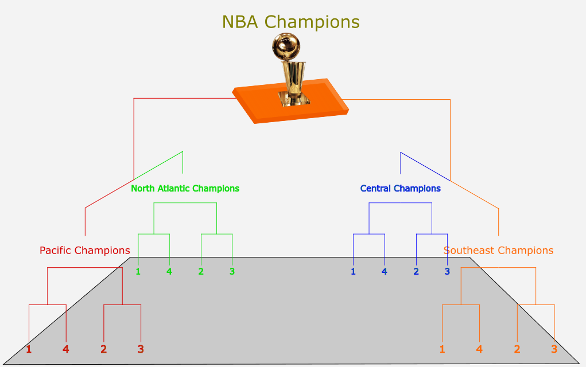
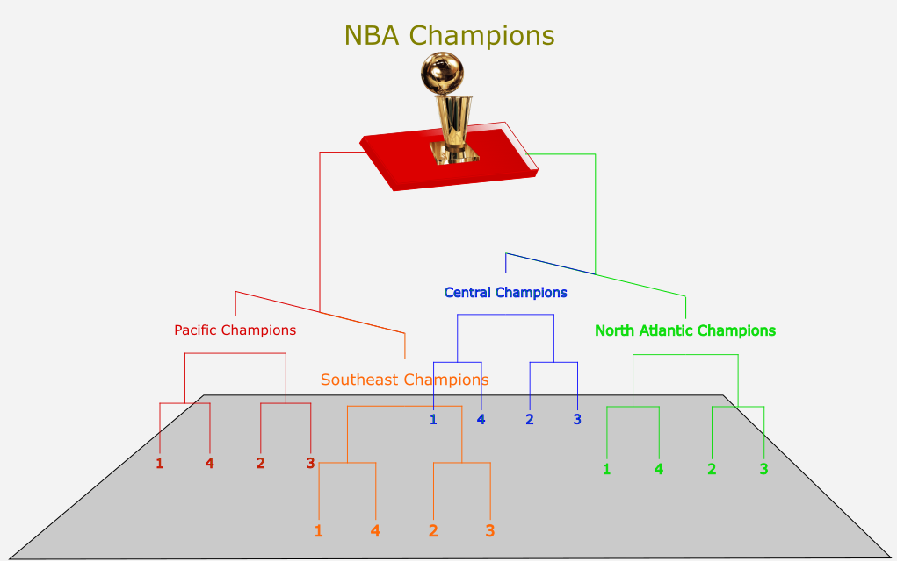

The conferences you see above, Pacific, Central, Southeast, and North Atlantic, are an example of possible NBA conference changes. The possibility does not include divisions.
Site's Revised Conferences
Both of the original conferences are split into two conferences apiece. The Pacific conference is essentially a Western Conference with 7 less teams and the North Atlantic is the Eastern conference with 8 less teams.
The Central and Southeast conferences divide the remaining teams into two other conferences. Southeast takes the southern 4 from the West and 3 from the East, while Central takes the northern 3 from the West and 5 from the East.
Schedule
The standings for the conferences are based on the current schedule. However, here is an ok example of how regular season and playoff schedules might work with the above conferences.
Regular Season
General
Each team has 3 requirements and an additional guideline to reach 82 games.
| Same Conference | Opp. Conference | Other Conferences | Remaining | |
|---|---|---|---|---|
| Central (8 teams) |
28 games | 21 games | 30 games | 3 games |
| North Atlantic (7 teams) |
24 games | 24 games | 30 games | 4 games |
| Pacific (8 teams) |
28 games | 21 games | 30 games | 3 games |
| Southeast (7 teams) |
24 games | 24 games | 30 games | 4 games |
Playoffs
Top 4 teams from each conference go into conference bracket ranked by regular season records. Team ranked first plays last, etc. like usual. In the end, There will be 4 conference champions.
It could progress two ways from here.
The champions face off in a bracket until the NBA champions come out. Teams can only be
conference champions and NBA champions. Example:

or
Semi Finals see the conference champions face off, contingent on not allowing the Pacific conference champions to face the North Atlantic conference champions. Then the game with Pacific conference champions would be the Western (super) conference finals and the game with the North Atlantic conference champions could be the Eastern (super) conference finals.
The Eastern and Western conference champions still face off as normal, but teams from the
mid-conferences could be both Eastern or Western conference champions in different
years. Example:

Notes